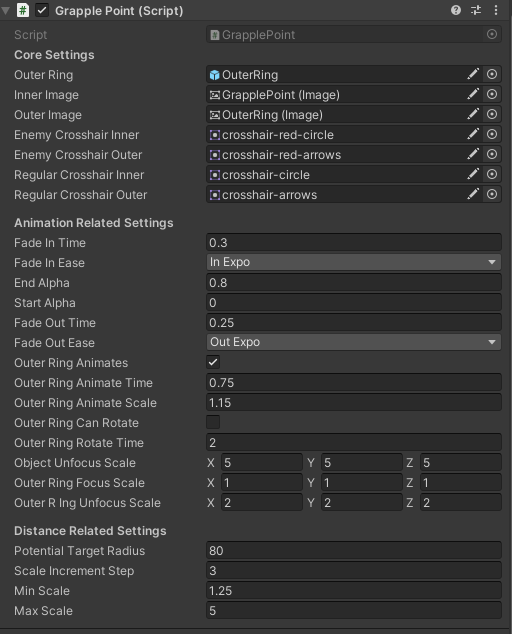

Oasis Blitz is a unique platforming game that has
drilling
as the main mechanic. You can drill into the terrain,
hop
out, drill into enemies. As a player, you will need to
master the way of the drill to overcome challenges and
be
the fastest fox in the desert!
My Role
I am a gameplay engineer on the team, and I have
worked on several different areas including:
Save and load system using XML
Checkpoint system
Gameplay animations using Animancer
Automated targeting for the grapple
mechanic
Enemy mechanics
Cool particles
Optimization through object pooling
Cinematics creation inside editor using
Cinemachine
and
splines
Our game's main architecture is a hiearchical
state
machine
for enemy and
player
movement mechanics. Using hiearchical statemachine
helped
all engineers on the team to structure their code
according
to a specified style, and implementing new player /
enemy
behaviors become a lot simpler.
For additional support, we are also leveraging available
powerful Unity packages like FMOD, DOTween, and
Cinemachine
to
facilitate the
development of our game.
Level Start Cinematics
Thanks to the powerful cinemachine package, I can use
its
functionalities to create cool cinematics rather quickly
with some scripting! I designed and implemented the
level
start cinematics. I was inspired by how Mario Kart games
did
their intro cutscenes to each course. So, I designed
cameras
to conduct some slow pans of the level and focusing on
some
landmarks that each level has.
My implementation of this system includes:
Splines to pan the cameras
Two cinemachine cameras to switch between them for
clean cuts
Minimal setup needed to function, just need to add
correct splines
To make the cut between each pan sharp, I
Once all splines are
named and
tagged correctly, the camera state machine will find all
needed splines and look at targets to setup the
cinematics automatically.
Automatic Target Selection
This system is built so that the grapple mechanic can be
fully realized. For players to understand what they are
grappling / smashing towards, a good reticle needs to
indicate the selected target. Since we are a platforming
game, it's best to make the target selection somewhat
automatic with minimal user input required. Therefore, I
designed and implemented this auto-targeting system to
choose the most desirable target and render a reticle
on that target.
My implementation includes:
A robust target selection algorithm using vector
math and sphere casts
A custom reticle design system that's friendly to
artists and designers
An accurate world to screen implementation of UI
elements

Grapple Reticle Settings
My goal as a gameplay engineer on the team has always
been implementing systems that are easily tweakable by
the design team. So, all the systems that I have built
will have necessary exposed values when possible. I also
ensure to follow the single responsibility
principle, making them less tightly coupled as
possible.